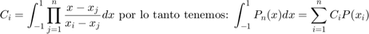

ASyS Practica 6: Convolución y correlación
Contents
- Integrantes
- Objetivos de la Practica:
- Introduccion
- Metodo numerico 1
- Método numérico 2
- Metodo numerico 3
- Metodo numerico 4
- Metodo numerico 5
- Desarrollo
- Problema 1
- Analitico Problema 1
- Convolucion Matlab
- Simulacion Problema 1
- Problema 2
- Analitico Problema 2
- Autocorrelacion MATLAB
- Problema 3
- C)
- D)
- Problema 4
- Problema 5
- C)
- D)
Integrantes
- Dorantes Ochoa Daniel
- Ruiz Guadarrama Juan Carlos
- Santos Garrido Diana Karen
- Lopez Solano Irvin
Objetivos de la Practica:
- Conocer métodos básicos de integración numérica *Manipulación de instrucciones en MATLAB *Simular convoluciones y correlaciones de señales continuas *Simular convoluciones y correlaciones de señales discretas
Introduccion
Metodo numerico 1
Este metodo consiste en aproximar nuestra funcion f(x) con un polinomio sencillo, proponiendo 3 rectas que encierren a nuestra funcion como lo pueden ser:
es decir si se quiere hacer la aprximacion de la integral de: de -1 a 1 se puede proponer un rectagunlo de de base 2 y altura 1 dando como resultado 2 mientras que el resultado de nuestra integral es 1.443
Método numérico 2
El método de Newton-cotes (cerrado) consta de aproximar la integral mediante encontrar un polinomio de grado n dependiendo de nuestra función f(x) y que coincide en ciertos puntos con la función original más un término de error.
Por lo que si se quiere un polinomio de grado 1 se requieren 2 puntos, del mismo modo se requiere que el paso entre los puntos sea el mismo mediante la fórmula:
Con todo esto ya podemos empezar a hacer las evaluaciones para f(x) con el polinomio que hayamos escogido mediante la fórmula:
Véase que terminó de error es el término que aparece del lado derecho de la primera evaluación.
Metodo numerico 3
Este metodo recibe el nombre de regla de simpson y consiste en usar la regla del trapecio descrito en el punto anterior pero ahora usando 3 o mas puntos por lo que la formula ahora queda como:
mientras que esta dado por el paso "h" descrito por:
Mientras que para para la misma funcion pero ahora para un polinomio de grado 3 tenemos: con
mientras que y estan dados por:
y como se puede deducir entre mas puntos tomemos el resultado sera mas exacto al resultado real pues se parece mas a la funcion original nuestras evaluaciones.
Metodo numerico 4
Ahora para este metodo podemos extender las formulas de newton-cotes bajo el nombre "newton-cotes compuestas" que basicamente consiste en tener un conjunto de trapecios en lugar de un solo trapecio. Por lo que ahora nuestra formula del trapecio compuesto se modifica de esta forma:
n lo que significa es el numero de intervalos de integracion, h o el paso se sigue calculando con la misma formula mientras que las
Mientras que ahora nuestras regla de simpson recibe el nombre de "Regla compuesta de simpson" y se utilizando 2 intervalos para generar una parabola entre ellos y seguir esta logica hasta cubrir toda nuestra area de integracion mediante la formula: con
Aqui "n" significa el numero de intervalos en que se divide la funcion original; el paso y los se calculan de la misma forma que en la regla del trapecio compuesto.
Metodo numerico 5
Este metodo recibe el nombre de cuadratura gaussiana que trata de hacer similutudes con las formulas de los trapecios y los metodos de simpson pues este metodo trata de aproximar la integral por evaluaciones en determinados puntos por determinadas constantes dentro del intervalo a,b en "n" iteraciones arrojando "2n" parametros. Este metodo numerico utiliza los polinomios de legendre que son polinomios entre -1 y 1. Por lo que si tenemos un Polinomio de legrende de grado n y sean las raices de podemos calcular los coeficientes como:

siendo de grado menor que 2n pero como ahora no tenemos un termino de error para las evaluaciones, sin embargo existen tablas para ello donde si se quiere aproximar un polinomio de grado 2 de legendre se necesitan 2 raices y 2 coeficientes multplicando dicho coeficiente con la evaluacion de la funcion en esa raiz, asi sucesivamente con cada grado "n" de los polinomios.
Su formula para una region de integracion distinta a (-1,1) se tiene que es:
donde los cambios de variables fueron:
Desarrollo
Para el desarrollo se tienen que resolver cada uno de los siguientes problemas comenzando una nueva sección (para la publicación) en cada uno de ellos. Para cada problema se tendrán que hacer las modíficaciones necesarias al código de ejemplo, convendría entonces pensar en realizar una modificación general de tal manera que el programa funcione para cualquier convolucion dos funciones, pero esto es opcional.
Problema 1
Para el PR04 reporte la grafica de la simulación númerica de la convolución y compare con el resultado análitico que obtuvo para el problema 1, esto es, su práctica tendrá que incluir una llamada a la funciónn convconm y posteriormente se tendrá que mostrar (mediante el Publish) la gráfica tanto de las señales involucradas como el resultado de la convolución, y en esta última gráficara su resultado analitico, se tendrá que incluir el resultado analitico.
Analitico Problema 1
Funcion x(t)
syms t f= exp(-t).*heaviside(t)-exp(-t).*heaviside(t-1); r= matlabFunction(f) t=-3:0.01:3; plot(t,r(t)); title('Funcion f(t)'); xlabel('t'); ylabel('f(t)')
r =
function_handle with value:
@(t)exp(-t).*heaviside(t)-heaviside(t-1.0).*exp(-t)
Funcion g(t)
syms t y= t.*heaviside(-t)+t.*heaviside(t)-t.*heaviside(-t-1)-t.*heaviside(t-1); e=matlabFunction(y); t=-3:0.001:3; plot(t,e(t)); ax = gca; ax.XAxisLocation = 'origin'; ax.YAxisLocation = 'origin'; title('Funcion g(t)'); xlabel('t'); ylabel('g(t)');
Convolucion de x(t)*g(t)
syms t tau F_rg = int(r(tau)*e(t-tau),tau,0,t); F_rg=simplify(F_rg,"Steps",30) l=matlabFunction(F_rg); t=-3:0.001:3; plot(t,l(t));
F_rg = heaviside(t)*(t + exp(-t) - 1) - heaviside(t - 1)*(exp(-t) - 2*exp(-1) + t*exp(-1)) - heaviside(t - 1)*(t - 1) + heaviside(t - 2)*exp(-1)*(t - 2)
Convolucion Matlab
figure subplot(1,3,1) syms t x=piecewise(t<0,0,0<=t<=1,exp(-t),t>1,0); fplot(x,[-1,3],'r') grid on title('x(t)') axis([-1 3.6 -2 2]); subplot(1,3,2) h=piecewise(t<-1,0,-1<t<1,t,1<t,0); fplot(h,[-3,3],'r') grid on title('h(t)') axis([-3 3 -2 2]); t1=-3:0.01:0; t2=0:0.01:1; t3=1:0.01:2; t4=2:0.01:3; subplot(1,3,3) plot(t1,0) hold on plot(t2,(.75).*exp(t2)-1); plot(t3,-(t3-2)) plot(t4,0) grid on title('x(t)*h(t)') axis([-1 3.6 -2 2]);
Simulacion Problema 1
h=@(t) t.*heaviside(-t)+t.*heaviside(t)-t.*heaviside(-t-1)-t.*heaviside(t-1); x=@(t) exp(-t).*heaviside(t)-exp(-t).*heaviside(t-1); convconm(x,h);
Problema 2
Para el PR05 reporte la grafica de la simulación númerica de la correalción y compare con el resultado análitico que obtuvo para el problema e), esto es, su práctica tendrá que incluir una llamada a la funciónn convconm y posteriormente se tendrá que mostrar (mediante el Publish) la gráfica tanto de las señales involucradas como el resultado de su correlación, y en esta última graficara su resultado analitico, se tendrá que incluir el resultado analitico.
Analitico Problema 2
Funcion Original
x(t)
syms t;
figure;
x1= heaviside(t)- 2.*heaviside(t-3)+ heaviside(t-4);
v= matlabFunction(x1);
t=-3:.01:12;
plot(t,v(t));
x(-t)
syms t;
figure;
x2= heaviside(-t)- 2.*heaviside(-t-3)+ heaviside(-t-4);
u= matlabFunction(x2);
t=-12:.01:3;
plot(t,u(t));
Autocorrelacion MATLAB
x=@(t) heaviside(t)- 2.*heaviside(t-3)+ heaviside(t-4); h=@(t) heaviside(-t)- 2.*heaviside(-t-3)+ heaviside(-t-4); convconm(x,h);
Problema 3
Realice la simuación de la convolución de las señales (c) con (d) del problema 3.1.1
C)
x = @(n) ((3*n).*heaviside(n)+(3*n).*heaviside(-n)); n = -3:3; figure stem(n,x(n)); title("Señal x[n]"); ylabel("x[n]"); xlabel("n"); n=-3:3; E = sum(x(n).^2)
E = 252
D)
x = @(n) ((2*n).*heaviside(n)+(-2*n).*heaviside(-n)); n = -2:2; figure stem(n,x(n)); title("Señal y[n]"); ylabel("y[n]"); xlabel("n"); n=-2:2; E = sum(x(n).^2);
n=0:10; a=[0 0 -9 -6 -3 0 3 6 9 0 0] b=[0 0 0 4 2 0 2 4 0 0 0] convdisc([n;a],[n;b]);
a =
0 0 -9 -6 -3 0 3 6 9 0 0
b =
0 0 0 4 2 0 2 4 0 0 0
Problema 4
Realice la simuación de la correlación de las señales (c) con (d) del problema 3.1.1
Usando la funcion Convdisc nos da:
a2 = @(n) ((3*n).*heaviside(n)+(3*n).*heaviside(-n)); a21=-3:3; b2 = @(n) ((2*-n).*heaviside(-n)+(-2*-n).*heaviside(+n)); b21= -2:2; convdisc([a21;a2(a21)],[b21;b2(b21)]);
Problema 5
Realice la la convolución de las señales (c) con (d) del problema 3.1.1 utilizando el comando conv de MATLAB, muestre el código utilizado y gráfique el resultado, sugerencia: Utilice las propiedades de traslación de la convolución.
C)
x = @(n) ((3*n).*heaviside(n)+(3*n).*heaviside(-n)); n = -3:3; figure stem(n,x(n)); title("Señal x[n]"); ylabel("x[n]"); xlabel("n"); n=-3:3; E = sum(x(n).^2)
E = 252
D)
y = @(n) ((2*n).*heaviside(n)+(-2*n).*heaviside(-n)); n = -2:2; figure stem(n,y(n)); title("Señal y[n]"); ylabel("y[n]"); xlabel("n"); n=-2:2; E = sum(y(n).^2);
n=-10:10; a=[0 0 -9 -6 -3 0 3 6 9 0 0] b=[0 0 0 4 2 0 2 4 0 0 0] C=conv(a,b); figure subplot(1,1,1) stem(n,C); title("Convolucion de señales x[n]*y[n]"); ylabel("x[n]*y[n]"); xlabel("n");
a =
0 0 -9 -6 -3 0 3 6 9 0 0
b =
0 0 0 4 2 0 2 4 0 0 0
function convdisc(x1,x2) Tam1 = size(x1(1,:)); Tam2 = size(x2(1,:)); T1 = Tam1(2); T2 = Tam2(2); T3 = T1+T2-1; vec1 = zeros(1,T1+2*T2-2); vec2 = zeros(1,T1+2*T2-2); Tec2 = -(T2-1):(T1+T2-2); size(vec2); size(Tec2); x3=zeros(2,T3); x3(1,:)=0:T3-1; x3(1,:)=x3(1,:)+x1(1,1)+x2(1,1); vec1(1,T2:T2+T1-1)=x1(2,:); figure (1) hFig = figure(1); set(hFig, 'Position', [0 0 1000 1000]) filename = 'testAnimated.gif'; ttt=1; for m=0:T1+T2-2 vec2(1,1+m:T2+m)=fliplr(x2(2,:)); x3(2,m+1)=sum(vec1.*vec2); subplot(4,1,4) stem(x3(1,:),x3(2,:),'r','LineWidth',3) axis([Tec2(1),T1+2*T2-2, min(x3(2,:))-1 max(x3(2,:))+1]) ylim('auto') ylabel('x_3[n]','FontWeight','bold','FontSize',16); xlabel('n','FontWeight','bold','FontSize',16); grid on subplot(4,1,1) stem(x2(1,:),x2(2,:),'k','LineWidth',3) ylabel('x_2[m]','FontWeight','bold','FontSize',16); xlabel('m','FontWeight','bold','FontSize',16); title('CONVOLUCIóN','FontWeight','bold','FontSize',16); grid on axis([Tec2(1),T1+2*T2-2, min(x2(2,:))-1 max(x2(2,:))+1]) ylim('auto') subplot(4,1,2) stem(x1(1,:),x1(2,:),'b','LineWidth',3) ylabel('x_1[m]','FontWeight','bold','FontSize',16); xlabel('m','FontWeight','bold','FontSize',16); grid on axis([Tec2(1),T1+2*T2-2, min(x1(2,:))-1 max(x1(2,:))+1]) ylim('auto') subplot(4,1,3) stem(Tec2,vec2(1,:),'g','LineWidth',3) axis([Tec2(1),T1+2*T2-2,min(vec2)-1, max(vec2)+1 ]) ylim('auto') ylabel('x_2[n-m]','FontWeight','bold','FontSize',16); xlabel('m','FontWeight','bold','FontSize',16); grid on drawnow; pause(0.4) vec2 = zeros(1,T1+2*T2-2); frame = getframe(hFig); im = frame2im(frame); [imind,cm] = rgb2ind(im,256); % Write to the GIF File if ttt == 1 imwrite(imind,cm,filename,'gif', 'Loopcount',inf); else imwrite(imind,cm,filename,'gif','WriteMode','append'); end ttt=ttt+1; end end
function convconm(x,h) figure (1) % Se crea una figura para hacer las gráficas dtau = 0.005; % Base de los rectangulos para realizar la integral tau = -1:dtau:4; % Intervalo de visualización del resultado ti = 0; % Indice para el vector de resultados tvec = -.25:.1:3.75; % traslaciones de t, cuantas integrales se calulan y = NaN*zeros(1, length (tvec)); % Resultados de acuerdo a cuantos t for t = tvec, % Cantidad de traslaciones ti = ti+1; % Indice para guardar el resultado (indice del tiempo) xh = x(t-tau).*h(tau); % resultado de la multiplicación lxh = length(xh); % longitud del resultado y(ti) = sum(xh.*dtau); % Base por altura, aproximación de la integral subplot (2,1,1), % gráfica de 2 x 1 (primera) plot(tau, h(tau), 'r-', tau, x(t-tau), 'g--', t, 0, 'ob'); %graficas axis ([tau(1) tau(end) -2.0 2.5]); % límites de los ejes patch([tau(1:end-1); tau(1:end-1); tau(2:end); tau(2:end)],... [zeros(1,lxh-1);xh(1:end-1);xh(2:end);zeros(1,lxh-1)],... [.8 .8 .8], 'edgecolor', 'none'); xlabel('\tau'); % Texto del eje X legend('h(\tau)', 'x(t-\tau)','t','h(\tau)x(t-\tau)')% Caja de Texto subplot (2, 1, 2) % gráfica de 2 x 1 (segunda) plot (tvec, y, 'k', tvec (ti), y(ti), 'ok'); xlabel ('t'); ylabel ('y(t) = \int h(\tau)x(t-\tau) d\tau'); axis ([tau(1) tau(end) -1.0 2.0]); % límites del eje grid; % malla drawnow; % efecto de movimiento continuo end end